The origin of “WD-XL” is well understood (I believe), which is a reference to the popular lubricant brand name. WD is the same old name, while XL is not only the Roman numeral of the original product name, but also the target of this font. “Lubrifont” is just... a font of lubricant?
WD-XL Lubrifont is based on ZCOOL QingKe HuangYou with additional characters for Traditional Chinese, fixing the symbols and punctuations while also adding more symbols for Chinese typesetting (e.g. hanyu pinyin and bopomofo). This font had also fixed numeral problems of the original font:
The introduction of original HuangYou on Google Fonts is as follow:

However, upon close inspection, some of the characters did not have the iconic 45° notched lower right corner. This issue is fixed in version 1.110, and now all the characters shall have similar visual appearance:
The Latin part of WD-XL Lubrifont is also fixed for better typesetting.
The font has not been updated for years. Apart from fixing problems in WD-XL Lubrifont, it also hears the voices from Traditional Chinese communities and adapt an appropriate version of font, WD-XL Lubrifont TC. TC version refers to Inherited Glyphs recommendation, one of the orthodox version of printed Chinese characters while keeping the original style.
WD-XL Lubrifont also makes hanyu pinyin, bopomofo, Pe̍h-ōe-jī and Tâi-lô! You can use this font to make professional Chinese typesetting!
| Hànyǔ pīnyīn | ㄓㄨˋ ㄧㄣ |
| Pe̍h-ōe-jī | Tâi-lô |
More OpenType features (mainly Latin) will be added to WD-XL Lubrifont in the future, stay tuned!
No! WD-XL Lubrifont inherits SIL Open Font License from the Google Fonts version of ZCOOL QingKe HuangYou, and thus it is free of charges! You may read the detailed license here or SC translation/TC translation.
WD-XL Lubrifont provides 4 different regional fonts, which are SC, TC, JPS and JPN. SC is for Simplified Chinese orthography, TC is for Traditional Chinese orthography, and both JPS and JPN are for Japanese orthography (these are experimental, but hey this whole font is experimental too). JPS is similar to Adobe Std (JIS X 0208:1990) standard, and JPN is similar to Adobe StdN (JIS X 0213:2004) standard.
Please visit the GitHub repo, download WD-XL Lubrifont and install.
Download now >WD-XL Lubrifont has set up multiple OpenType features, let’s have a look!
First thing first: Fix this ugly X. (it’s optional!)
| X | > | X |
Now let’s play some ligatures: Chinese dash usually takes up the width of two characters and shown as connected, but normally dashes need to leave a gap at the left and right to prevent messing with other words (such as one, 一).
So what should we do? Here’s a suggestion: use ligatures. You need to open it in the settings.
| —— | > | —— |
| ——— | > | ——— |
Have you found the easter egg too?
Next up: most Chinese punctuations usually take up the space of one character width and placed at centered, but Western punctuations have proportional width (to glyph width), and thus this had affected some of the punctuations. In this font, we would like to try a new approach: putting Western punctuations in ss18 and turning on this feature in software to automatically swap out the punctuations in problem. This feature contains the ellipsis, interpunct (U+00B7 MIDDLE DOT), quotation marks, and diacritic marks.
| (‘A·檬纱…’) | > | (‘A·檬纱…’) |
Even different regions of Chinese users place their punctuations in different places. For Simplified Chinese, most punctuations are placed at the bottom left corner, while most Traditional Chinese regions place the punctuations at the center. Thus, we have assigned ss19 and ss20 to provide ease of choice to change the punctuations as the user sees fit.
ss19: Punctuations for Simplified Chinese (cornered form).
ss20: Punctuations for Traditional Chinese (centered form).
| 嗨！你，好；吗？ | > | 嗨！你，好；吗？ |
These option will change the punctuations that are affected in ss18 too, namely interpunct and ellipsis. For ss20 (Traditional Chinese punctuation), spacing modifier tones for bopomofo are modified to match the size of bopomofo too.
| ㄓㄨˋ ㄧㄣˉ | > | ㄓㄨˋ ㄧㄣˉ |
OK, let’s get serious. Hanyu pinyin, Taiwan Minnanyu Luomazi Pinyin Fang'an (or Tâi-lô) and Pe̍h-ōe-jī uses accented characters, between these Tâi-lô and Pe̍h-ōe-jī used characters that are unencoded, and thus requiring glyph compositing, ccmp to compose these glyphs. This function is on by default in most softwares, users will not need to care of these.
| a̍ | Ô͘ | m̋ | n̄ | ú | È | Ň | ĭ |
| Ĕ | u̍ | ê | ő | Ī | Ḿ | Ù | Ǎ |
| ǒ | ĕ | i̍ | ô͘ | Ő | ū | ń | m̀ |
| ǘ | Ň | Ề | Ǖ | Ŝ | ü | ẑ | ŋ |
Actually, ŋ is not in ccmp. ŋ is the shorthand form of ng [Source] in hanyu pinyin, thus it isn’t like the others that are a letter with a diacritical marks. However, we could not add ng into ligatures or else it will affect other languages. Thus, this font has set the shorthand ng/NG in discretionary ligatures to ease the users with simple access, while unaffecting other languages (such as suffix -ing in English). ẑ, ĉ, ŝ are also the shorthand form of zh, ch, sh respectively, and due to the same reasons they are set in dlig. This functionality requires manual setting.
| TÍNG Zhǎngdà | > | TÍNG Zhǎngdà |
Originally a fun side project font, some functionalities are tested on this font too. We will be introducing Simplified/Traditional character conversions, letting the font to convert one-to-one characters automatically (such as 語-语), while options will be provided to users for one-to-many characters. smpl (Simplified forms) will convert Traditional characters to Simplified characters, while trad (Traditional forms) will convert Simplified characters to Traditional characters.
This feature is not available in most softwares. You may try this functionality in browser at the next section.
In version 2.000, we have introduced a single TrueType collection font (TTC) that merges both SC and TC version of the font into a single font file. This has drastically reduced the file size and provides the ability to change the localization of characters to fit both Simplified Chinese and Traditional Chinese. By setting the language of the text, the characters will change to the localized form automatically.
| SC | TC |
|---|---|
| 給别開青面， 致敬勇敢體。 |
給别開青面， 致敬勇敢體。 |
This feature available in some softwares (mainly softwares that provide language tagging) and should be on by default. You may try this functionality in browser at the next section.
Lastly, to ease the user experience, all the above features (excluding liga and dlig) will be put in access all alternates, aalt, thus softwares may provide selection for characters in aalt.
Try out WD-XL Lubrifont now!
You may provide feedback and suggestions in the issues page of Github repo. You are also welcomed to contribute to this font through GitHub.
Thanks are given to following peoples:
Lastly, merry christmas and a happy new year!